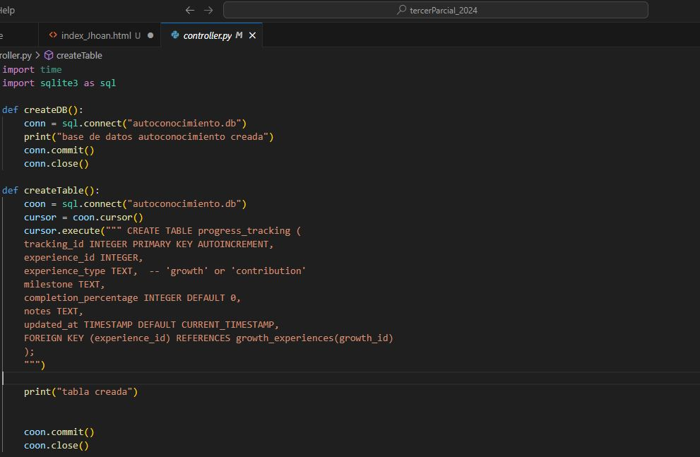
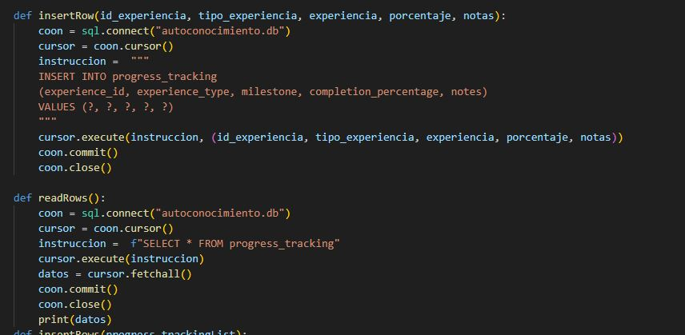

import time
import sqlite3 as sql
def createDB():
conn = sql.connect("autoconocimiento.db")
print("base de datos autoconocimiento creada")
conn.commit()
conn.close()
def createTable():
coon = sql.connect("autoconocimiento.db")
cursor = coon.cursor()
cursor.execute(""" CREATE TABLE progress_tracking (
tracking_id INTEGER PRIMARY KEY AUTOINCREMENT,
experience_id INTEGER,
experience_type TEXT, -- 'growth' or 'contribution'
milestone TEXT,
completion_percentage INTEGER DEFAULT 0,
notes TEXT,
updated_at TIMESTAMP DEFAULT CURRENT_TIMESTAMP,
FOREIGN KEY (experience_id) REFERENCES growth_experiences(growth_id)
);
""")
print("tabla creada")
coon.commit()
coon.close()
def insertRow(id_experiencia, tipo_experiencia, experiencia, porcentaje, notas):
coon = sql.connect("autoconocimiento.db")
cursor = coon.cursor()
instruccion = """
INSERT INTO progress_tracking
(experience_id, experience_type, milestone, completion_percentage, notes)
VALUES (?, ?, ?, ?, ?)
"""
cursor.execute(instruccion, (id_experiencia, tipo_experiencia, experiencia, porcentaje, notas))
coon.commit()
coon.close()
def readRows():
coon = sql.connect("autoconocimiento.db")
cursor = coon.cursor()
instruccion = f"SELECT * FROM progress_tracking"
cursor.execute(instruccion)
datos = cursor.fetchall()
coon.commit()
coon.close()
print(datos)
por ultimo podemos visualizar la tabla con los datos agregados